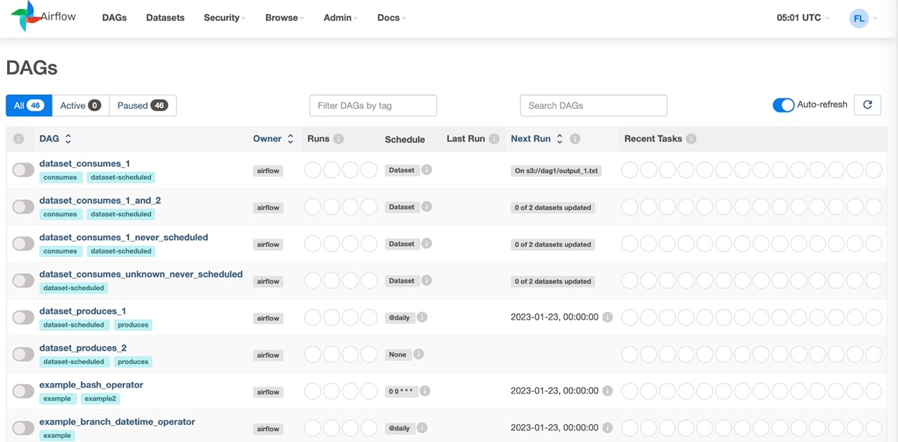

Airflow는 데이터 파이프라인을 관리하고 스케줄링하기 위한 오픈소스 플랫폼입니다. Airflow는 일련의 작업(Task)을 DAG(Directed Acyclic Graph)로 구성하고, 각 작업이 완료될 때까지 기다렸다가 다음 작업을 실행할 수 있도록 설정할 수 있습니다.
Airflow의 가장 큰 장점 중 하나는 유연성입니다. 사용자는 Python으로 작성된 코드를 이용해 다양한 작업(Task)을 정의할 수 있습니다. 또한 Airflow는 다양한 플러그인을 지원하며, 다양한 데이터 소스와 연동이 가능합니다.
Airflow는 초보 사용자들도 쉽게 사용할 수 있도록 웹 인터페이스를 제공합니다. 이를 통해 DAG를 만들고, 실행 및 모니터링할 수 있습니다. 또한 Airflow는 강력한 스케줄링 기능을 제공하여, 작업들이 시간에 맞춰 정확히 실행될 수 있도록 지원합니다.
Airflow는 데이터 파이프라인 관리 및 스케줄링에 있어 매우 유용한 도구입니다. 초보 사용자라도 쉽게 접근할 수 있는 웹 인터페이스와 강력한 스케줄링 기능을 제공하여 데이터 파이프라인을 더욱 효율적으로 관리할 수 있습니다.
airflow 설치
apache/airflow 도커 이미지는 다음과 같은 사항이 포함되어 있습니다.
- Airflow 설치시 필요한 패키지가 포함된 기본 OS(안정적인 Debian OS)
- 릴리스된 Airflow의 MINOR 버전에 대해 릴리스 당시 지원되는 버전의 기본 Python 설치
- 지원되는 데이터베이스에 연결하는 데 필요한 라이브러리
Airflow 설치를 간소화 하기 위해 bitnami/airflow 이미지를 이용합니다.
$ docker pull bitnami/airflow
Using default tag: latest
latest: Pulling from bitnami/airflow
dfe669f82390: Pull complete
8bf860e9a38f: Pull complete
Digest: sha256:a757ac272b952f4b0be9f12058e0fea5a8181d24c4c1ae420ae1bb713a9de8ae
Status: Downloaded newer image for bitnami/airflow:latest
docker.io/bitnami/airflow:latest
가져온 bitnami/airflow 관련 도커 이미지를 확인합니다.
$ docker images
REPOSITORY TAG IMAGE ID CREATED SIZE
bitnami/airflow 2 6aa6064d8264 3 hours ago 1.55GB
bitnami/airflow latest 6aa6064d8264 3 hours ago 1.55GB
bitnami/airflow-scheduler 2 cf2f68fdfd6a 5 hours ago 1.46GB
bitnami/airflow-worker 2 4bf59d142d53 5 hours ago 1.47GB
bitnami/redis 7.0 2a5106976cc6 2 days ago 95.4MB
bitnami/postgresql 15 22990d7b6444 2 days ago 277MB
docker compose yml 파일을 다운로드 받습니다.
$ curl -sSL https://raw.githubusercontent.com/bitnami/containers/main/bitnami/airflow/docker-compose.yml > docker-compose.yml
$ docker-compose up -d
도커 컴포즈로 컨테이너를 실행하면 관련 컨테이너가 함께 실행됩니다.
$ docker ps
CONTAINER ID IMAGE COMMAND CREATED STATUS PORTS NAMES
4ff78cfe8381 bitnami/airflow:2 "/opt/bitnami/script…" 14 minutes ago Up 10 minutes 0.0.0.0:16000->8080/tcp script_airflow_1
1cb60d61b189 bitnami/airflow-scheduler:2 "/opt/bitnami/script…" 14 minutes ago Up 14 minutes script_airflow-scheduler_1
c3351b1b29a0 bitnami/postgresql:15 "/opt/bitnami/script…" 14 minutes ago Up 14 minutes 5432/tcp script_postgresql_1
74e9986a176a bitnami/redis:7.0 "/opt/bitnami/script…" 14 minutes ago Up 14 minutes 6379/tcp script_redis_1
기본적으로 아래와 같이 db가 초기화 되어 있고 8080 웹서버가 실행되어 있습니다.
airflow db init
airflow webserver -p 8080
도커 컴포즈로 Airflow 관련 도커 컨테이너가 실행되면 아래 URL로 Airflow 로그인 페이지 접속이 가능합니다.
http://127.0.0.1:8080/
Airflow를 접속하기 위한 초기의 id와 password는 아래와 같습니다.
id : user
password : bitnami
